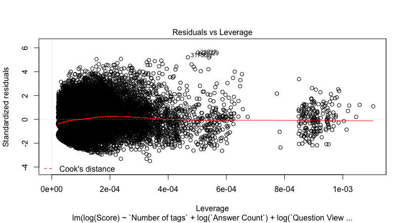

val ts : obj
Full name: index.ts
Full name: index.ts
val box : value:'T -> obj
Full name: Microsoft.FSharp.Core.Operators.box
Full name: Microsoft.FSharp.Core.Operators.box
Exploring StackOverflow
Evelina Gabasova
@evelgab


?


Questions


Tags
- What are the most common tags?
Tags
- What are the most common tags?
- When do people ask questions?
Question: When?


Weekend index
Most weekend
- Minecraft : 1.19
- LWJGL : 1.12
- SFML (Simple and Fast Multimedia Library) : 1.06
- D : 1.04
- pygame : 1.03
Most weekday
- SQL Server Reporting Services 2008, r2 : 0.11
- Infragistics : 0.13
- SQL Server Reporting Services 2008 : 0.13
- Axapta : 0.13
- DocusignAPI : 0.14
Most common tags
Continuous integration

Continuous integration


Jupyter notebooks
?


Question: Where?
Where?
- 5 277 833 users in total
- 769 541 filled in their location
$HOME
83%
(Unfortunately) Germany
7151 Mawson Station, Australian Antarctic Territory, Antarctica
Where?
F#
\[n \times \frac{1}{\text{population}} \times \frac{\text{registered}}{\text{located}} \times 1,000,000\]
ppm (Programmers-per-million)
Where really?
F#
(Sampling bias)

Tags + Users
=
Communities
Tags
define
relations
F# |
C# |
JS |
R |
Cobol |
|
|---|---|---|---|---|---|
Evelina |
1 |
0 |
1 |
1 |
0 |
Krzysztof |
1 |
1 |
1 |
0 |
0 |
44 265 tags x 5 277 831 users
Users with more than 1,000 posts
Tags with more than 5,000 posts
807 tags, 1633 power users
t-SNE
t-distributed Stochastic Neighbourhood embedding
Embedding


t-SNE in R
1: 2: 3: 4: 5: |
|
t-SNE in F#
1: 2: 3: 4: 5: 6: |
|
The best thing about R is that it was written by statisticians.
The worst thing about R is that it was written by statisticians.
Bow Cowgill, 2009
fable.io


Platzer, A. (2013). Visualization of SNPs with t-SNE. PLoS ONE, 8(2), e56883.
Quantifying Communities


No overlap
iOS - R
Django - middleware
Most Central
Based on number of connections
- arrays
- string
- performance
Communities
Clustering of nodes in a network

(depending on algorithm used)

(depending on algorithm used)

(depending on algorithm used)
✔ Tags
✔ Users
✔ Technologies
Questions and Answers
Word2vec
word embeddings
t-SNE
Point + local neighbourhood
⬇
2D embedding
Word2vec
Word + local context
⬇
vector-space embedding

(image source: blog.acolyer.org/2016/04/21/the-amazing-power-of-word-vectors/)
Vector-space embedding

Word2vec
F# is a functional language on the .NET platform.
Scala is a functional/object oriented language on the JVM.
Scala - JVM + .NET
=
C#, F#
F# - .NET
=
SML, OCaml, GHCi, Haskell, Idris


Is
StackOverflow
a meritocracy?


Regression
input data
⬇
score
Input data
18,100,293 rows
"Accepted" "Question Score" "Number of tags" "Answer Count" "Comment Count" "Question Favourite Count" "Question View Count" "Author Reputation" "Author Profile Views" "Author Up Votes" "Author Down Votes" "Gold Badges" "Silver Badges" "Bronze Badges" "Author Number of Tags" "Time to Answer"⬇
"Score"
linear regression, nonlinear regression, random forests, SVMs, neural networks

Most predictive
- Question favourites
- Question view count
- Accepted



Quality matters
... unless you are Jon Skeet
Technological side of things
Tool for the job
Data science side of things
Questions
|
F# Software foundation

Board of trustees
- Mentorship program
- Support for user groups and speakers
- Affiliated user groups
- Discussions about supporting the community
Board elections
| Nominations start | 6 April |
| Campaign start | 25 April |
| Voting start | 9 May |
| Voting end | 15 May |